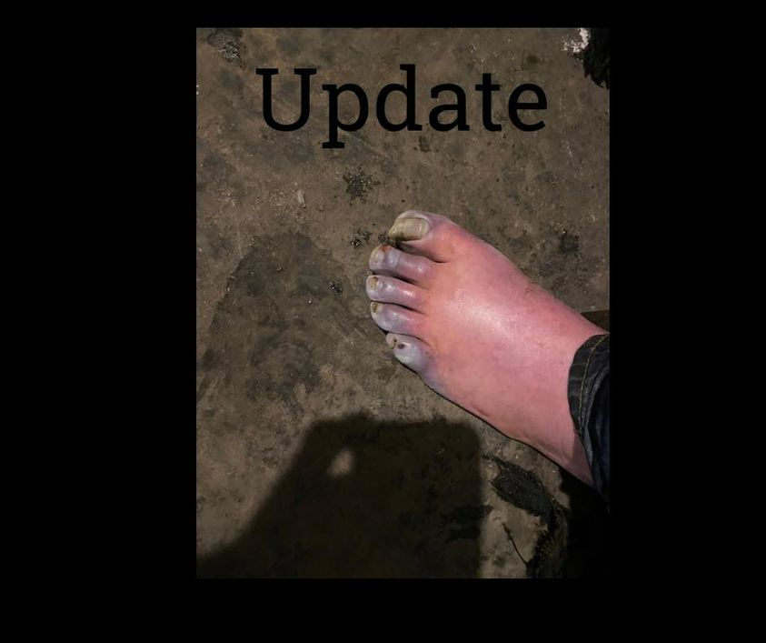

Mobile uploads
I wanted to give you an update about this man’s foot that many of you were so beautifully worried about yesterday.
He wouldn’t go.
There was nothing we could do to get him to go to the hospital.
He just kept saying, “I’m good. I just need to sit in the warmth for a while.”
I’ve smelled rotting flesh on a person before. This doesn’t smell yet. But it’s also probably frozen.
We all tried to get him to go. His friends offered to go and sit with him. There was nothing any of us could do.
This situation brings me back to the philosophical question of whether or not homeless people are choosing to be homeless. I think it’s a fair question.
Here is a person who probably has frost bite and refuses to go the hospital. We can’t force him to go. He’s CHOOSING not to go. I think that’s true.
But the reason he is making this choice is where things get complicated.
He is choosing to not go because he is extremely paranoid. He’s afraid of everything. He’s afraid “they” are coming to get him.
It might be the drugs. It might be the extreme mental illness he has that he covers up with meth… much like some of us cover up our emotions with a bag of chips, a cigarette, or a drink.
I think most of us are deluding ourselves about how much free will we have. The Bible has convinced us that we all have the ability to choose. But when we invariably choose “wrong” it’s because we are fundamentally flawed and bad.
I certainly hate myself. It’s a big reason I do this work. I should be better.
But the truth is much more complicated. We are stuck. We get afraid. We can’t move out of a bad situation even though we know we should.
Why are you still eating that junk food?
Why do you still live with the spouse that you can barely stand to look at any more? For the kids? They left years ago.
Are you going to be the last person on Earth who still smokes cigarettes?
We’re not bad. We’re just… human.
Homeless people are nothing more than a high definition mirror of ourselves. We are all homeless. We are all broken. And we all need love and forgiveness and compassion even though we are so frustrating and broken and stuck.
I love you.
(He wears size 12.5 boots. But you are all so beautifully kind, you’ll have to decide who gets to buy him boots among yourselves.)